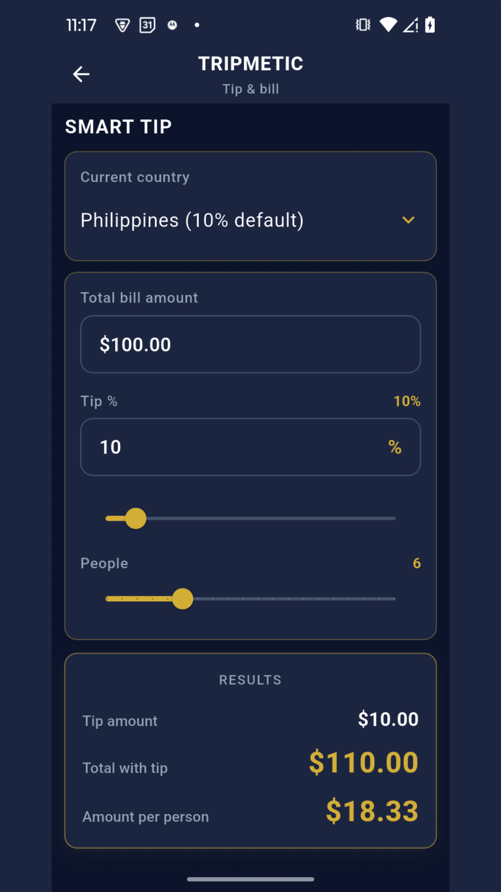
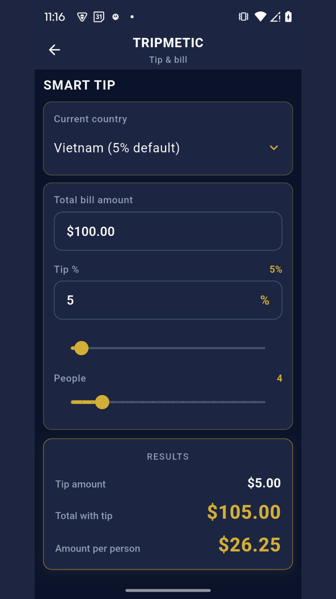
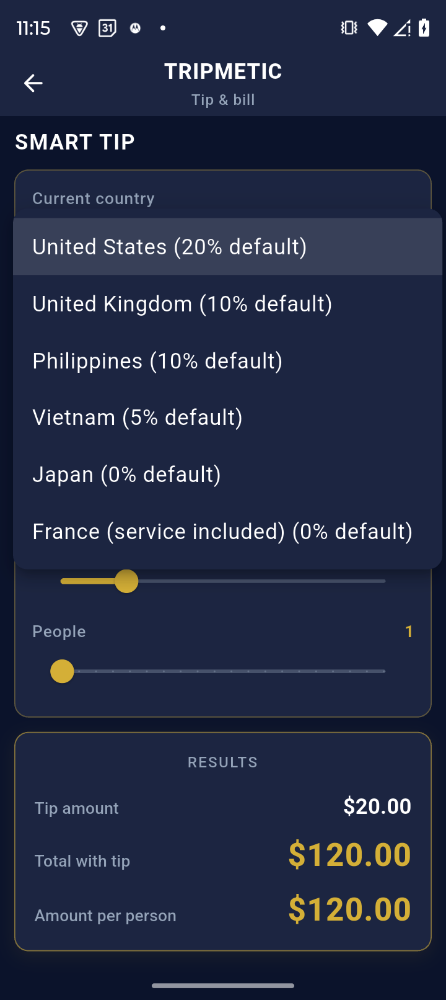

Navigating group dinners abroad often ends in a chaotic mix of napkin math and cultural missteps. Accidentally leaving a 20% tip in Japan can be highly offensive, while leaving 0% in New York is a massive faux pas.
The Tripmetic Bill Splitter & Smart Gratuity engine is designed to eliminate this friction. By utilizing a data-driven cultural database, it calculates the perfect tip and divides the check among your group with fintech-level accuracy.
1 Input the Base Cost
Navigate to the More Tools menu and tap on Smart Tip & Bill Splitter. Start by entering the final check amount exactly as it appears on your receipt in the local currency.

2 Apply Data-Driven Gratuity
Instead of guessing the local customs, let the algorithm handle it. Tap the country selector and choose your current destination (e.g., Vietnam, France, or the USA). Tripmetic will immediately load the culturally appropriate tipping standard for that region.
The app will instantly calculate the exact tip amount and add it to your total. If you received exceptional service, you can easily use the manual override slider to increase the percentage.
3 Split the Check
Whether you are splitting a taxi fare with a coworker or dividing a large banquet among a team of twenty, simply adjust the Group Size slider. The interface will instantly divide the grand total (base cost + gratuity) evenly among all members, outputting the exact localized amount each person owes.

4 Instant Currency Translation
Telling your friend they owe "4,500 Baht" isn't helpful if they don't know the conversion rate. At the bottom of the screen, Tripmetic takes the individualized split amount and runs it through the live exchange rate engine.
You can instantly see exactly what your specific share of the dinner costs in your home fiat currency (e.g., USD or EUR), allowing you to accurately log the expense in your master budget.

Frequently Asked Questions
Yes. The cultural tipping database is baked directly into the app's architecture and requires zero connectivity. However, the final translation back to your home currency will rely on your most recently cached offline exchange rates.
To ensure high-fidelity accuracy across complex global tax structures, Tripmetic calculates the tip percentage based on the exact numeric value you input. We recommend inputting the final post-tax receipt total as your baseline.
Currently, the tool is optimized for rapid, even divisions (e.g., splitting a check straight down the middle for a team). For highly complex, itemized line-by-line splitting, we recommend running separate calculations for individual items.